Sử dụng signal
Trong bài này, chúng ta sẽ tìm hiểu về signal. Đó là các thông điệp mà node phát ra khi có điều gì đó cụ thể xảy ra với chúng, chẳng hạn một nút được nhấn. Các node khác có thể kết nối với signal đó và gọi một hàm khi sự kiện xảy ra.
Signal là cơ chế ủy quyền được tích hợp sẵn trong Godot, cho phép một đối tượng trong game phản ứng với thay đổi ở đối tượng khác mà không cần tham chiếu lẫn nhau. Dùng signal giúp hạn chế sự phụ thuộc (coupling) và giữ cho code của bạn linh hoạt.
Ví dụ, bạn có thể có một thanh máu trên màn hình thể hiện máu của người chơi. Khi người chơi bị sát thương hoặc dùng bình hồi máu, bạn muốn thanh máu phản ánh thay đổi đó. Để làm việc này trong Godot, bạn sẽ dùng signal.
Giống như phương thức (class_callable), signal là kiểu first-class kể từ Godot 4.0. Điều này có nghĩa là bạn có thể truyền chúng trực tiếp làm đối số của phương thức mà không phải truyền dưới dạng chuỗi, giúp tự động hoàn thành tốt hơn và ít lỗi hơn. Xem tài liệu tham khảo lớp class_signal để biết danh sách những gì bạn có thể làm trực tiếp với kiểu Signal.
Xem thêm
Như đã đề cập trong phần giới thiệu, signal là phiên bản của mẫu observer (observer pattern) trong Godot. Bạn có thể tìm hiểu thêm về nó trong Game Programming Patterns.
Giờ chúng ta sẽ dùng một signal để làm cho biểu tượng Godot ở bài trước (Lắng nghe input của người chơi) di chuyển và dừng lại khi nhấn một nút.
Ghi chú
Trong dự án này, chúng ta sẽ tuân theo quy ước đặt tên của Godot.
GDScript: Lớp (node) dùng PascalCase, biến và hàm dùng snake_case, hằng số dùng ALL_CAPS (Xem Hướng dẫn phong cách GDScript).
C#: Lớp, biến export và phương thức dùng PascalCase, trường private dùng _camelCase, biến cục bộ và tham số dùng camelCase (Xem Hướng dẫn phong cách C#). Hãy cẩn thận gõ chính xác tên phương thức khi kết nối signal.
Thiết lập scene
Để thêm một nút vào game, chúng ta sẽ tạo một scene mới chứa cả một Button và scene sprite_2d.tscn mà chúng ta đã tạo trong bài Tạo script đầu tiên.
Tạo một scene mới bằng cách vào menu .

Trong dock Scene, nhấp nút . Việc này sẽ thêm một Node2D làm node gốc.
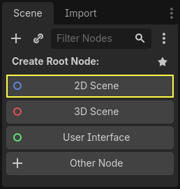
Trong FileSystem dock, nhấp và kéo file sprite_2d.tscn bạn đã lưu trước đó thả vào Node2D để tạo instance cho nó.
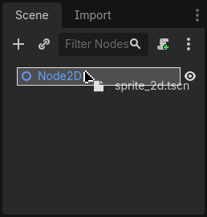
Chúng ta muốn thêm một node khác ngang hàng với Sprite2D. Để làm vậy, nhấp chuột phải vào Node2D và chọn .
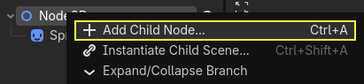
Tìm node Button và thêm nó vào.
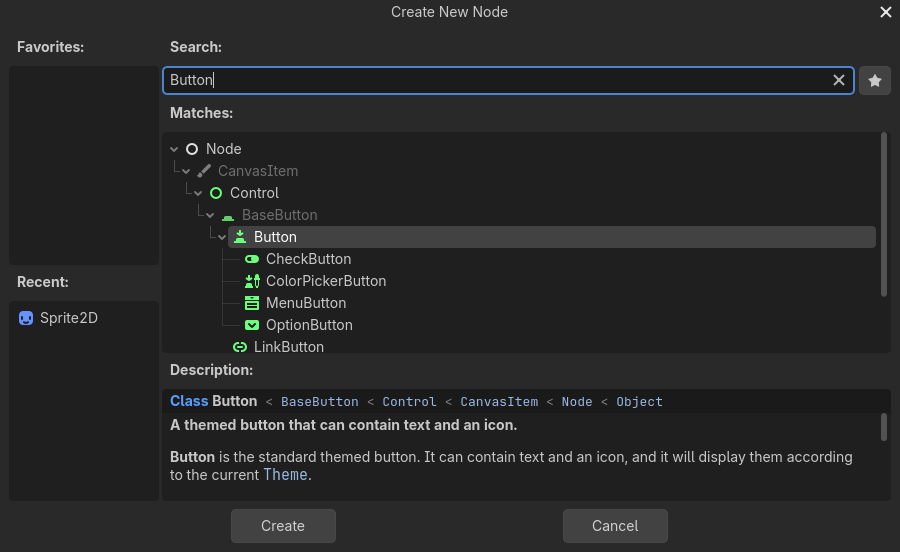
Mặc định node này khá nhỏ. Nhấp và kéo tay cầm ở góc dưới bên phải của Button trong viewport để thay đổi kích thước.
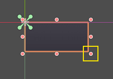
Nếu bạn không thấy các tay cầm, hãy đảm bảo công cụ chọn (select) đang được bật trên thanh công cụ.
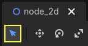
Nhấp và kéo chính nút đó để di chuyển nó lại gần sprite.
Bạn cũng có thể ghi nhãn lên Button bằng cách chỉnh sửa thuộc tính Text của nó trong Inspector. Nhập Toggle motion.
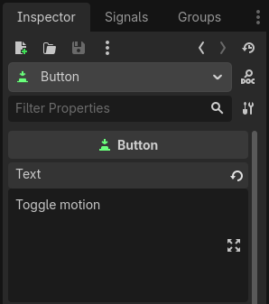
Cây scene và viewport của bạn sẽ trông như thế này.
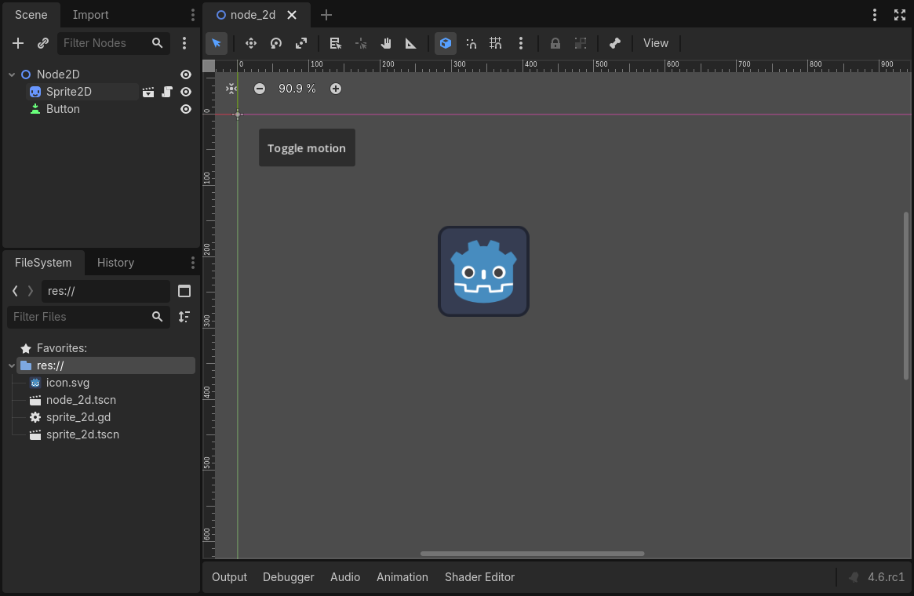
Lưu scene vừa tạo thành node_2d.tscn nếu bạn chưa làm. Sau đó bạn có thể chạy nó bằng F6 (Cmd + R trên macOS). Hiện tại, nút sẽ hiển thị nhưng sẽ không có gì xảy ra nếu bạn nhấn vào.
Kết nối signal trong trình chỉnh sửa
Ở đây, chúng ta muốn kết nối signal "pressed" của Button với Sprite2D, và muốn gọi một hàm mới để bật/tắt chuyển động của nó. Chúng ta cần có một script được gắn vào node Sprite2D, điều mà chúng ta đã làm ở bài trước.
Bạn có thể kết nối signal trong dock Signals. Chọn node Button và, ở bên phải trình chỉnh sửa, nhấp vào tab tên là Signals bên cạnh Inspector.
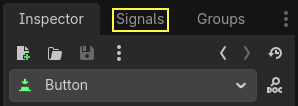
Dock này hiển thị danh sách các signal có sẵn trên node đang được chọn.
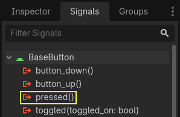
Nhấp đúp vào signal "pressed" để mở cửa sổ kết nối node.
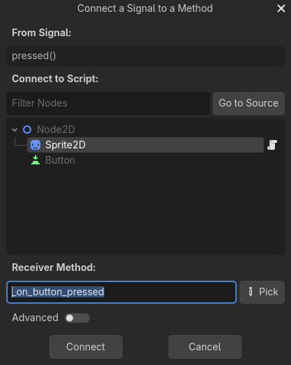
Tại đó, bạn có thể kết nối signal với node Sprite2D. Node cần có một phương thức nhận, tức là hàm mà Godot sẽ gọi khi Button phát ra signal. Trình chỉnh sửa sẽ tạo sẵn một hàm cho bạn. Theo quy ước, chúng ta đặt tên các phương thức callback này là "_on_node_name_signal_name". Ở đây, nó sẽ là "_on_button_pressed".
Ghi chú
Khi kết nối signal qua dock Signals của trình chỉnh sửa, bạn có thể dùng hai chế độ. Chế độ đơn giản chỉ cho phép bạn kết nối tới các node đã được gắn script và sẽ tạo một hàm callback mới trên chúng.
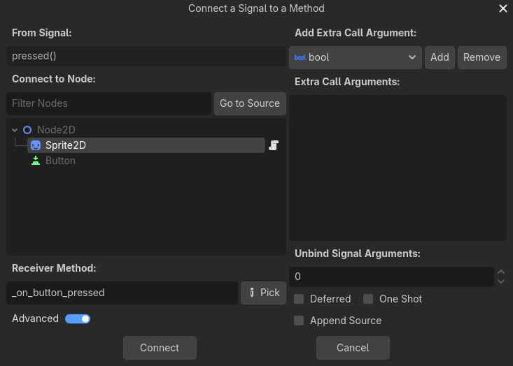
Chế độ nâng cao cho phép bạn kết nối tới bất kỳ node nào và bất kỳ hàm có sẵn nào, thêm đối số cho callback và thiết lập các tùy chọn. Bạn có thể chuyển đổi chế độ ở góc dưới bên trái cửa sổ bằng cách nhấp nút .
Ghi chú
Nếu bạn dùng trình soạn thảo bên ngoài (chẳng hạn VS Code), tính năng tự động sinh code này có thể không hoạt động. Khi đó, bạn cần kết nối signal bằng code như được giải thích ở phần tiếp theo.
Nhấp nút để hoàn tất kết nối signal và chuyển sang workspace Script. Bạn sẽ thấy phương thức mới với biểu tượng kết nối ở lề trái.
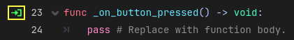
Nếu bạn nhấp vào biểu tượng, một cửa sổ sẽ hiện ra và hiển thị thông tin về kết nối. Tính năng này chỉ có khi kết nối node trong trình chỉnh sửa.
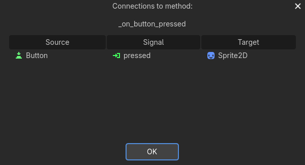
Hãy thay dòng chứa từ khóa pass bằng code sẽ bật/tắt chuyển động của node.
Sprite2D của chúng ta di chuyển nhờ code trong hàm _process(). Godot cung cấp một phương thức để bật/tắt việc xử lý: Node.set_process(). Một phương thức khác của lớp Node, is_processing(), trả về true nếu xử lý idle đang hoạt động. Chúng ta có thể dùng từ khóa not để đảo ngược giá trị.
func _on_button_pressed():
set_process(not is_processing())
// We also specified this function name in PascalCase in the editor's connection window.
private void OnButtonPressed()
{
SetProcess(!IsProcessing());
}
Hàm này sẽ bật/tắt việc xử lý, và qua đó bật/tắt chuyển động của biểu tượng mỗi khi nhấn nút.
Trước khi thử game, chúng ta cần đơn giản hóa hàm _process() để node tự động di chuyển và không chờ đầu vào từ người dùng. Hãy thay nó bằng đoạn code sau, mà chúng ta đã thấy ở hai bài trước:
func _process(delta):
rotation += angular_speed * delta
var velocity = Vector2.UP.rotated(rotation) * speed
position += velocity * delta
public override void _Process(double delta)
{
Rotation += _angularSpeed * (float)delta;
var velocity = Vector2.Up.Rotated(Rotation) * _speed;
Position += velocity * (float)delta;
}
Code sprite_2d.gd hoàn chỉnh của bạn sẽ trông như sau.
extends Sprite2D
var speed = 400
var angular_speed = PI
func _process(delta):
rotation += angular_speed * delta
var velocity = Vector2.UP.rotated(rotation) * speed
position += velocity * delta
func _on_button_pressed():
set_process(not is_processing())
using Godot;
public partial class MySprite2D : Sprite2D
{
private float _speed = 400;
private float _angularSpeed = Mathf.Pi;
public override void _Process(double delta)
{
Rotation += _angularSpeed * (float)delta;
var velocity = Vector2.Up.Rotated(Rotation) * _speed;
Position += velocity * (float)delta;
}
// We also specified this function name in PascalCase in the editor's connection window.
private void OnButtonPressed()
{
SetProcess(!IsProcessing());
}
}
Chạy scene hiện tại bằng cách nhấn F6 (Cmd + R trên macOS), và nhấp nút để thấy sprite bắt đầu và dừng lại.
Kết nối signal bằng code
Bạn có thể kết nối signal bằng code thay vì dùng trình chỉnh sửa. Điều này là cần thiết khi bạn tạo node hoặc tạo instance scene bên trong script.
Hãy dùng một node khác ở đây. Godot có node Timer rất hữu ích để triển khai thời gian hồi chiêu, nạp đạn cho vũ khí, và nhiều thứ khác.
Quay lại không gian làm việc 2D. Bạn có thể nhấp vào chữ "2D" ở phía trên cửa sổ hoặc nhấn Ctrl + F1 (Ctrl + Cmd + 1 trên macOS).
Trong Scene dock, nhấp chuột phải vào node Sprite2D và thêm một node con mới. Tìm Timer và thêm node tương ứng. Scene của bạn giờ sẽ trông như thế này.
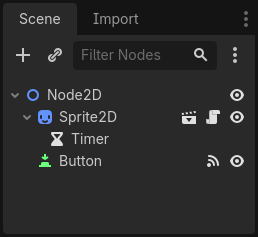
Khi node Timer đang được chọn, đi đến Inspector và bật thuộc tính Autostart.
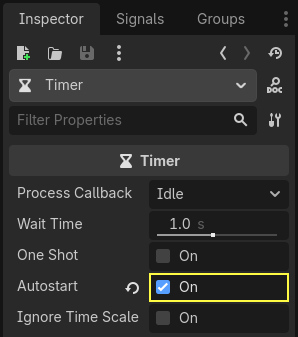
Nhấp vào biểu tượng script bên cạnh Sprite2D để quay lại không gian làm việc scripting.
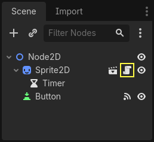
Chúng ta cần thực hiện hai thao tác để kết nối các node bằng code:
Lấy tham chiếu đến Timer từ Sprite2D.
Gọi phương thức
connect()trên signal "timeout" của Timer.
Ghi chú
Để kết nối với một signal bằng code, bạn cần gọi phương thức connect() của signal mà bạn muốn lắng nghe. Trong trường hợp này, chúng ta muốn lắng nghe signal "timeout" của Timer.
Chúng ta muốn kết nối signal khi scene được tạo instance, và có thể làm điều đó bằng hàm có sẵn Node._ready(), được engine gọi tự động khi một node đã được tạo instance hoàn chỉnh.
Để lấy tham chiếu đến một node tương đối với node hiện tại, chúng ta dùng phương thức Node.get_node(). Chúng ta có thể lưu tham chiếu đó vào một biến.
func _ready():
var timer = get_node("Timer")
public override void _Ready()
{
var timer = GetNode<Timer>("Timer");
}
Hàm get_node() tìm trong các node con của Sprite2D và lấy node theo tên. Ví dụ, nếu bạn đổi tên node Timer thành "BlinkingTimer" trong trình chỉnh sửa, bạn sẽ phải đổi lời gọi thành get_node("BlinkingTimer").
Giờ chúng ta có thể kết nối Timer với Sprite2D trong hàm _ready().
func _ready():
var timer = get_node("Timer")
timer.timeout.connect(_on_timer_timeout)
public override void _Ready()
{
var timer = GetNode<Timer>("Timer");
timer.Timeout += OnTimerTimeout;
}
Dòng này có nghĩa là: chúng ta kết nối signal "timeout" của Timer với node mà script được gắn vào. Khi Timer phát ra timeout, chúng ta muốn gọi hàm _on_timer_timeout(), hàm mà chúng ta cần định nghĩa. Hãy thêm nó vào cuối script và dùng nó để bật/tắt trạng thái hiển thị của sprite.
Ghi chú
Theo quy ước, chúng ta đặt tên các phương thức callback này trong GDScript là "_on_node_name_signal_name" và trong C# là "OnNodeNameSignalName". Ở đây, nó sẽ là "_on_timer_timeout" với GDScript và OnTimerTimeout() với C#.
func _on_timer_timeout():
visible = not visible
private void OnTimerTimeout()
{
Visible = !Visible;
}
Thuộc tính visible là một giá trị boolean điều khiển việc hiển thị node. Dòng visible = not visible sẽ đảo giá trị. Nếu visible là true, nó sẽ thành false, và ngược lại.
Nếu bây giờ bạn chạy scene Node2D, bạn sẽ thấy sprite nhấp nháy bật tắt sau mỗi giây.
Script hoàn chỉnh
Vậy là xong bản demo nhỏ về biểu tượng Godot di chuyển và nhấp nháy! Dưới đây là file sprite_2d.gd hoàn chỉnh để bạn tham khảo.
extends Sprite2D
var speed = 400
var angular_speed = PI
func _ready():
var timer = get_node("Timer")
timer.timeout.connect(_on_timer_timeout)
func _process(delta):
rotation += angular_speed * delta
var velocity = Vector2.UP.rotated(rotation) * speed
position += velocity * delta
func _on_button_pressed():
set_process(not is_processing())
func _on_timer_timeout():
visible = not visible
using Godot;
public partial class MySprite2D : Sprite2D
{
private float _speed = 400;
private float _angularSpeed = Mathf.Pi;
public override void _Ready()
{
var timer = GetNode<Timer>("Timer");
timer.Timeout += OnTimerTimeout;
}
public override void _Process(double delta)
{
Rotation += _angularSpeed * (float)delta;
var velocity = Vector2.Up.Rotated(Rotation) * _speed;
Position += velocity * (float)delta;
}
// We also specified this function name in PascalCase in the editor's connection window.
private void OnButtonPressed()
{
SetProcess(!IsProcessing());
}
private void OnTimerTimeout()
{
Visible = !Visible;
}
}
Signal tùy chỉnh
Ghi chú
Phần này là tài liệu tham khảo về cách định nghĩa và sử dụng signal của riêng bạn, và không dựa trên dự án đã tạo ở các bài trước.
Bạn có thể định nghĩa signal tùy chỉnh trong script. Ví dụ, giả sử bạn muốn hiển thị màn hình game over khi máu của người chơi về 0. Để làm vậy, bạn có thể định nghĩa một signal tên là "died" hoặc "health_depleted" khi máu của họ về 0.
extends Node2D
signal health_depleted
var health = 10
using Godot;
public partial class MyNode2D : Node2D
{
[Signal]
public delegate void HealthDepletedEventHandler();
private int _health = 10;
}
Ghi chú
Vì signal đại diện cho các sự kiện vừa xảy ra, chúng ta thường dùng một động từ hành động ở thì quá khứ để đặt tên cho chúng.
Signal của bạn hoạt động giống như các signal có sẵn: chúng xuất hiện trong tab Signals và bạn có thể kết nối với chúng như bất kỳ signal nào khác.
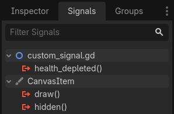
Để phát ra một signal trong script, hãy gọi emit() trên signal đó.
func take_damage(amount):
health -= amount
if health <= 0:
health_depleted.emit()
public void TakeDamage(int amount)
{
_health -= amount;
if (_health <= 0)
{
EmitSignal(SignalName.HealthDepleted);
}
}
Một signal có thể khai báo thêm một hoặc nhiều đối số (không bắt buộc). Hãy chỉ định tên các đối số trong cặp dấu ngoặc đơn:
extends Node2D
signal health_changed(old_value, new_value)
var health = 10
using Godot;
public partial class MyNode : Node
{
[Signal]
public delegate void HealthChangedEventHandler(int oldValue, int newValue);
private int _health = 10;
}
Ghi chú
Các đối số của signal hiển thị trong dock Signals của trình chỉnh sửa, và Godot có thể dùng chúng để sinh các hàm callback cho bạn. Tuy nhiên, bạn vẫn có thể phát đi bao nhiêu đối số tùy ý khi phát signal. Vì vậy, việc phát đúng giá trị là trách nhiệm của bạn.
Để phát ra giá trị kèm theo signal, hãy thêm chúng làm đối số bổ sung cho hàm emit():
func take_damage(amount):
var old_health = health
health -= amount
health_changed.emit(old_health, health)
public void TakeDamage(int amount)
{
int oldHealth = _health;
_health -= amount;
EmitSignal(SignalName.HealthChanged, oldHealth, _health);
}
Tóm tắt
Mọi node trong Godot đều phát ra signal khi có điều gì đó cụ thể xảy ra với chúng, chẳng hạn một nút được nhấn. Các node khác có thể kết nối với từng signal riêng lẻ và phản ứng với các sự kiện được chọn.
Signal có rất nhiều công dụng. Với chúng, bạn có thể phản ứng khi một node vào hoặc rời khỏi thế giới game, khi có va chạm, khi nhân vật vào hoặc rời một khu vực, khi một phần tử giao diện thay đổi kích thước, và nhiều hơn nữa.
Ví dụ, một Area2D đại diện cho đồng xu sẽ phát ra signal body_entered mỗi khi physics body của người chơi đi vào collision shape của nó, cho phép bạn biết khi nào người chơi đã nhặt được nó.
Trong phần tiếp theo, Game 2D đầu tiên của bạn, bạn sẽ tạo một game 2D hoàn chỉnh và áp dụng mọi thứ đã học từ đầu đến giờ vào thực tế.